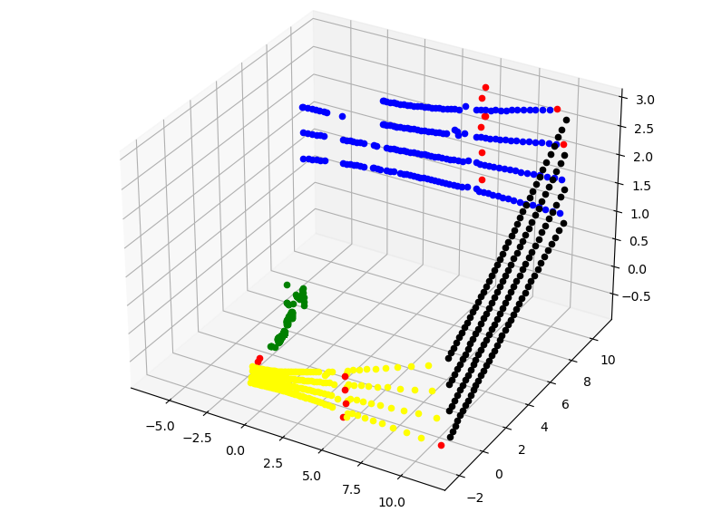
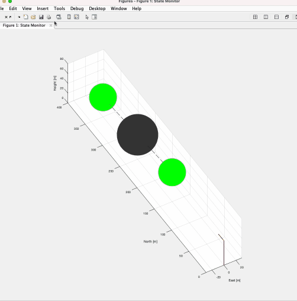
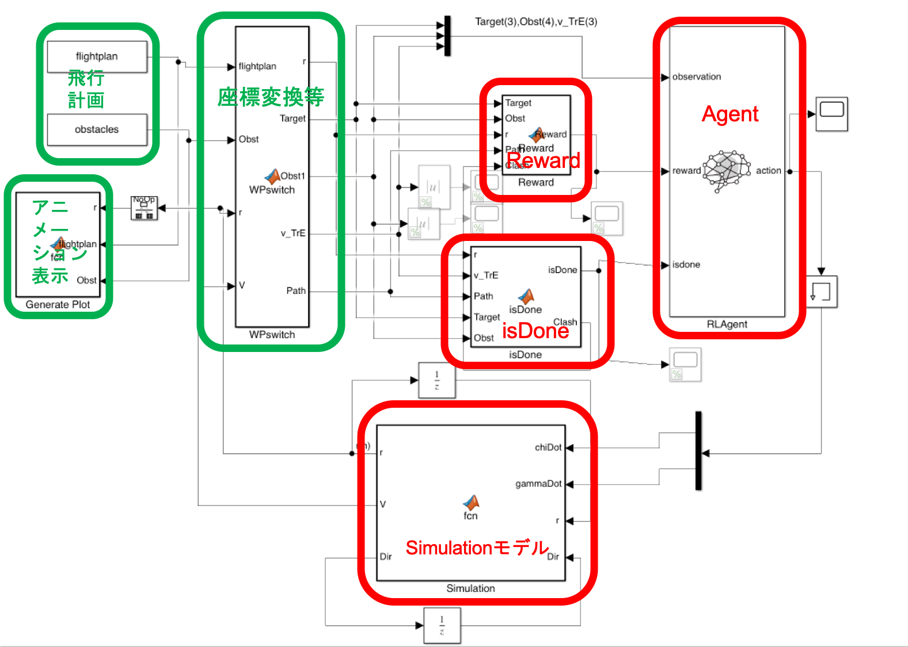

Detecting sluice gates using machine learning

This project aims to apply machine learning to real raw data, rather than data for standard training such as MNIST.
In our group, we obtained radar measurement data of ships passing through the sluice gate from a company where our group members did internship. We applied machine learning to these data. The measurement data of the sluice gate is shown in the upper right. It is impossible to determine which measurement point is located pm the movable part (gate), side wall, and other parts of the sluice gate. Our model was trained to automatically determine them.
Development of an interface between finite element method and a machine learning framework
We developed an interface between FEniCS, a finite element method framework that allows direct input of governing equations, and PyTorch, a machine learning framework. Neural network are used to predict unknown terms.

Development of a Flight Control Program using Reinforcement Learning
A flight control program was developed using reinforcement learning to avoid obstacles and pass the destinations. In order to reduce the learning time significantly, a two-stage method was used, in which training was performed on a simple simulation model and later adapted to a complex real-world model.
